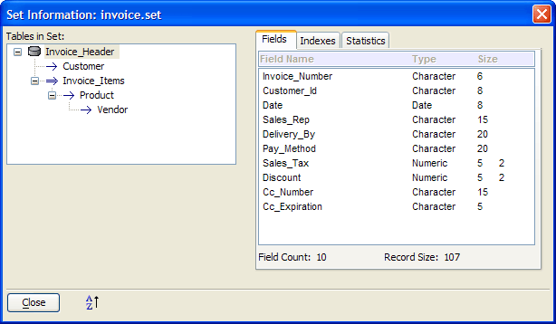
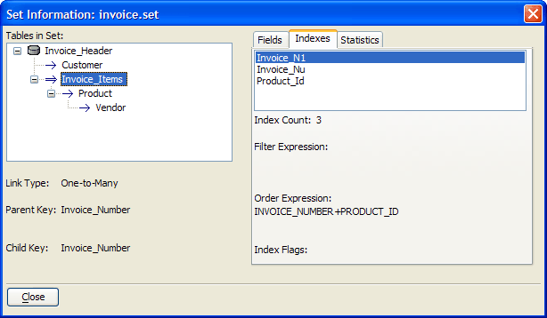
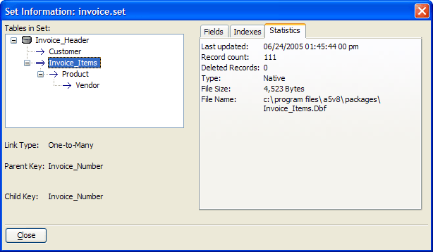

Set Information Dialog Box
When the Tables/Sets tab of the Control Panel is visible, select a set and click Set > Properties to display the Set Information dialog box. The Set Information dialog box displays the following information about a set:
Parent Table : Name, Child Tables
Child Tables : Name, Link Type, Parent Key, Child Key
Fields : Name, Field Type, Size
Indexes : Name, Filter Expression, Order Expression, Sort Flags
Statistics : Last update date and time, Record Count, Deleted Records, Type, File Size, File Name and Path.

Fields Tab

Indexes Tab

Statistics Tab
See Also
Table Statistics Dialog Box, Table Information Dialog Box